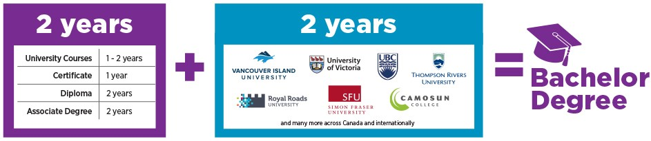

Connecting with Computer Science
Computer Science is the science of solving problems using computers.
With a significant mathematics component, you will learn to analyze problems, design solutions
and then implement them by writing computer programs. You will also learn to understand the underlying
hardware of a computer and will be well prepared for the
workplace or for continued study in graduate school
Program Overview
- The Associate of Science Degree in Computer Science
provides students with knowledge of the principles and
science that underlie computing. It also prepares
students to pursue a Bachelor’s degree in Computer
Science or a related field.
- Students will build a solid foundation in computer
systems, software engineering, foundational
programming, web development and systems design.
- Graduates will acquire working knowledge of computer
architecture and data science.
- Students will gain practical skills in solving computing
problems of our digital age through the use of
mathematics.
Study Pathway

Co-op : Work while you learn
Associate program of Computer Science also offers an optional co-operative education component where you can take the skills you've learned in the classroom and apply them in an actual workplace. And, you get paid to do it!
Co-op students typically earn around $5800-$9000 a semester, in addition to gaining invaluable experience for your resume.
Career Pathways
- information systems analysts and consultants
- computer and network operators and web technicians
- computer programmers and interactive media developers
- software engineers
- computer and information systems managers
- graphic designers and illustrators
- database analysts and data administrators